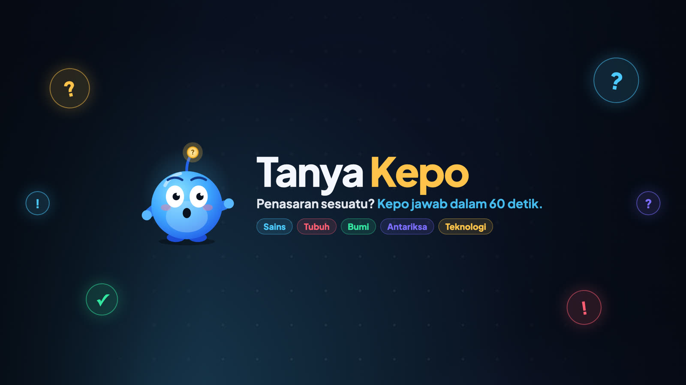

Tanya Kepo
Tanya Kepo is an Indonesian educational YouTube Shorts channel. Our mascot Kepo answers everyday "why?" questions about science, the human body, Earth, space and technology with short original animations.
Tanya Kepo Uploader
Tanya Kepo Uploader is a private command-line tool used only by the owner of the Tanya Kepo channel. It uses the YouTube Data API to upload and schedule the channel's own original videos (title, description, tags, category and publish time).
- It is not offered to the public and has a single user: the channel owner.
- It only requests permission to upload videos and to read the authenticated channel's basic information.
- It does not access, store or share any other user's data.
Read the Privacy Policy and Terms of Service.